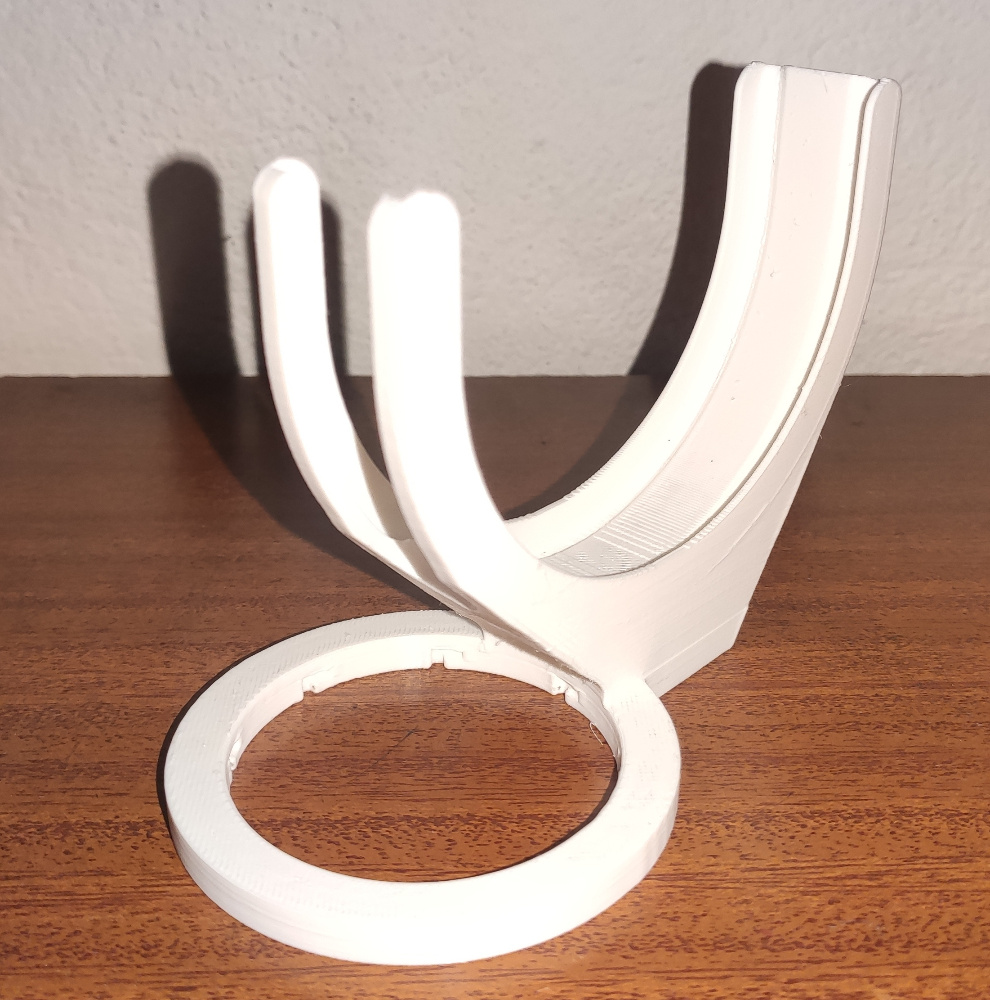
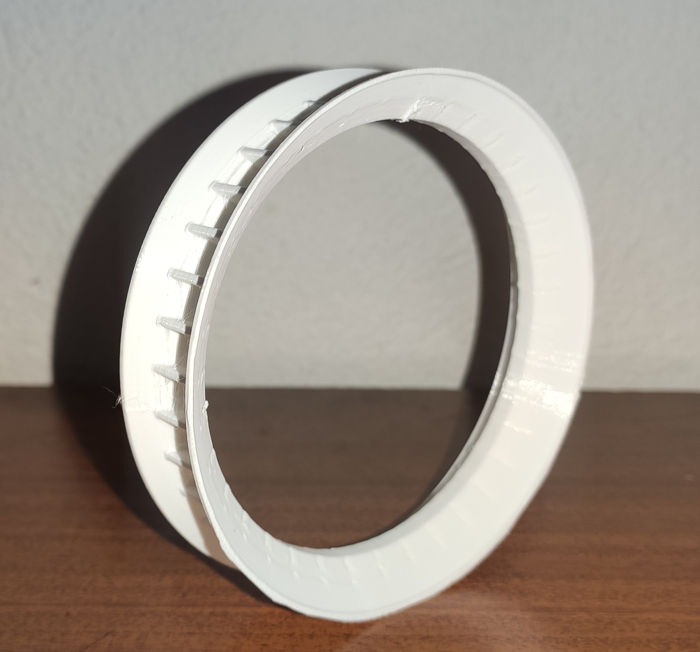
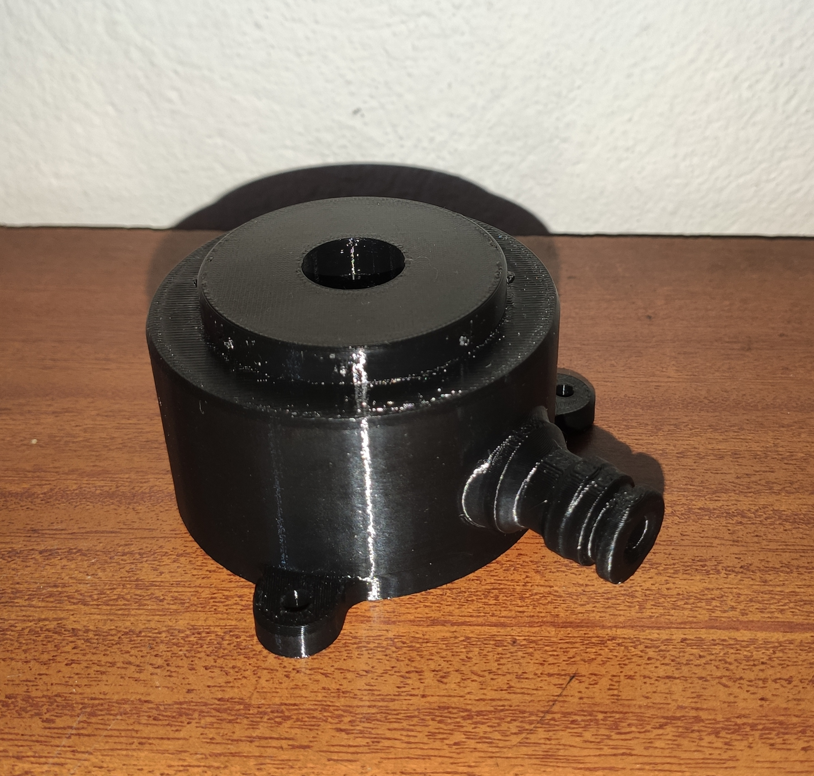
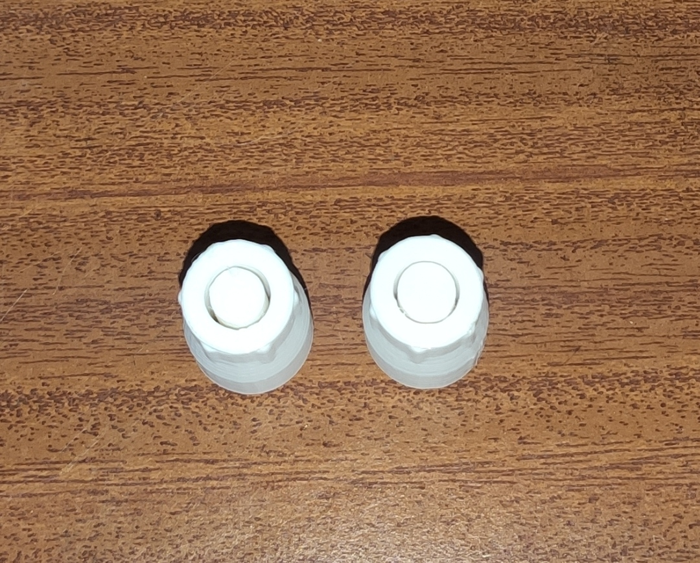
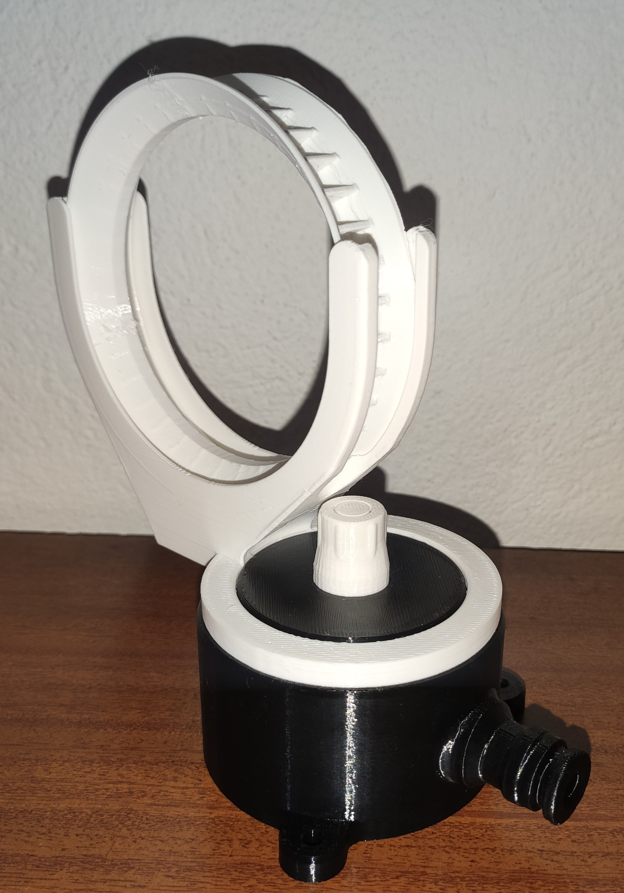

Aburrá Physics:
Levitación Hidrodinámica
Explorando la física de fluidos a través del juego. Un dispositivo impreso en 3D que levita aros usando vórtices de agua controlados.

Explorando la física de fluidos a través del juego. Un dispositivo impreso en 3D que levita aros usando vórtices de agua controlados.
Somos un equipo multidisciplinario de la cátedra Física de las Grandes Ideas, dedicados a materializar conceptos complejos en soluciones innovadoras y lúdicas.
CEO
Director Científico
Directora Financiera
Director Creativo
La enseñanza de la física en edades tempranas suele ser abstracta y teórica, lo que dificulta despertar el interés de los niños. Existe la necesidad de crear herramientas educativas e interactivas que permitan visualizar fenómenos complejos, como la mecánica de fluidos, de manera lúdica y accesible.
Este proyecto funciona como una startup científica en pequeña escala, integrando conocimientos de:
La levitación hidrodinámica del dispositivo se explica mediante tres principios físicos fundamentales:
Si el aro se desplaza hacia un lado del chorro, la velocidad del fluido disminuye en esa zona, incrementando la presión y empujando el aro de regreso hacia el centro. La ecuación de conservación de energía para fluidos es:
El agua es dirigida a través y alrededor de las superficies del aro. El aro ejerce una fuerza sobre el agua y, por reacción, el agua ejerce sobre el aro una fuerza hacia arriba y hacia adentro, manteniéndolo dentro del chorro y sustentándolo contra la gravedad.
Levitar un aro (objeto plano) es más complejo que levitar esferas: requiere mantener una orientación vertical estricta. Las estrías internas del aro lo obligan a rotar, otorgándole un momento angular que actúa como un giroscopio hidrodinámico y estabiliza su posición.
Al variar la presión del fluido utilizando las diferentes boquillas del juguete impreso en 3D, la altura de levitación del aro cambiará. Se hipotetiza que una presión adecuada y controlada permitirá una rotación estable (momento angular) del aro, mientras que un exceso de presión generará turbulencias que romperán el estado de equilibrio.
El dispositivo fue modelado paramétricamente con Autodesk Fusion 360 y se compone de 5 piezas interconectables impresas en PET, un material elegido por su alta resistencia al impacto y excelente comportamiento ante la humedad.

Cámara de remanso con conector para manguera y orejas de anclaje para fijar el dispositivo a una superficie plana, manteniendo el chorro en un eje estrictamente vertical.
Diseño cónico convergente con estrechamiento moderado. Genera un flujo suave que permite al aro mantener su equilibrio giroscópico y alcanzar mayor altura.
Efecto Venturi pronunciado: al tener un estrechamiento mayor, acelera el fluido incrementando significativamente la presión cinética del chorro.
Cuna geométrica para posar el aro antes de abrir el flujo. Asegura su centrado y evita que salga despedido lateralmente durante el arranque.
Elemento central con estrías o álabes internos. Al interactuar con el agua, estas estrías obligan al aro a rotar, otorgándole el momento angular necesario para la estabilidad giroscópica.
Piezas reales impresas en PET mediante manufactura aditiva.

Anclaje guía en media luna

Aro flotante con álabes internos

Base hidráulica

Boquillas intercambiables v1 y v2

Ensamble completo del sistema hidrodinámico
Demostraciones generales
Demostración 1
Demostración 2
Demostración 3
Demostración 4
Pruebas de altura por boquilla
Prueba de altura — Boquilla v1 (menor presión)
Prueba de altura — Boquilla v2 (mayor presión)
| Boquilla | Altura máxima | Comportamiento y estabilidad | Resultado |
|---|---|---|---|
| v1 (menor presión) | 1.20 m | El aro logra una rotación constante y equilibrada. Mantiene su orientación vertical con facilidad, elevándose de forma estable hasta su punto máximo. | Exitoso |
| v2 (mayor presión) | 0.70 m | El flujo es muy turbulento para la masa del aro. Presenta rotación errática y vibraciones excesivas. Pierde su orientación vertical rápidamente y es expulsado. | Inestable |
| Pieza | Cantidad | Material (mm) | Tiempo (min) | Costo (COP) |
|---|---|---|---|---|
| Anclaje | 1 | 8 610 | 112 | $10.621,33 |
| Aro | 1 | 3 270 | 54 | $4.416,00 |
| Base | 1 | 13 040 | 115 | $14.265,33 |
| Boquilla v1 | 1 | 1 470 | 23 | $1.942,67 |
| Boquilla v2 | 1 | 1 470 | 23 | $1.942,67 |
| Total | 5 | 27 860 | 327 | $33.188,00 |
Impacto de la masa frente a la presión: Se observa un fenómeno contraintuitivo: la boquilla de menor presión logró una altura de levitación considerablemente mayor. Al utilizar la boquilla v2 (alta presión), la fuerza del chorro supera con creces el peso del ligero aro e introduce inestabilidades laterales muy fuertes que el objeto no puede compensar.
Pérdida del momento angular: Con la alta presión (v2), el impacto del agua desestabiliza el eje de rotación, eliminando el momento angular. Al perder la orientación vertical, el efecto Coandă colapsa y el aro es expulsado a los 0.70 m. Con v1, el flujo es lo suficientemente suave para que el aro mantenga su equilibrio giroscópico y trepe hasta 1.20 m.
El experimento requiere un flujo constante de agua y un espacio apto para mojarse, lo que restringe los entornos de uso del juguete a ambientes con acceso a agua corriente.
Incorporar un manómetro analógico o sensor de presión digital en la línea de entrada de la manguera conectada a la base hidráulica. Esta adición permitirá registrar con certeza cuantitativa los valores exactos de presión (en kPa o PSI) bajo los cuales opera cada boquilla, logrando correlacionar matemáticamente la presión del fluido con el umbral exacto donde el aro pierde su estabilidad giroscópica.